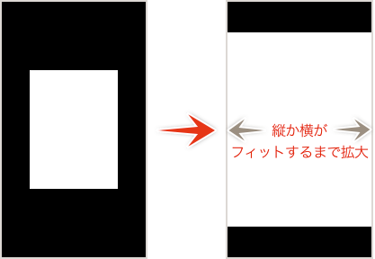

Sketch.app Advent Calender 2013 22日目の記事です。以前もリリースされた時に記事を書きましたが、Sketch.appのアートボードをiOSでプレビューできる「Sketch Mirror」の解説をお届けします。
Sketchの基本。というSketch（Sketch 3）の基本操作にフォーカスした電子書籍をリリースしました。詳しくはこちらの「Sketchの基本。」のページをご覧ください。
この記事はSketch 2を元にした記事です。最新版の動作とは異なる可能性が高いため、参考程度にご覧ください。
## Sketch Mirrorとは Sketch.appのアートボードを（ほぼ）リアルタイムでiOS側に表示するアプリです。特に、iOS向けのU.I.を制作している場合に、実機プレビューとして威力を発揮します。昔からあるPhotoshopと[Skala Preview][2]みたいなものですね。 ## Sketch.appとSketch Mirrorを接続 Sketch Mirrorは有料（2015/8/31時点で600円）ですので、[iTunes Storeで購入][3]しておきましょう。 iOS側でSketch Mirrorを先に立ち上げてから、Sketch.appのツールパーにあるConnectアイコンをクリックします。
操作方法
Sketch.appにアートボードがないと、プレビューできませんので、アートボードを作成しておきます。
複数のアートボードやページがあれば、左右のスワイプでアートボードの変更、上下のスワイプでページの変更です。タップすればメニューが表示されるので、ページの指定かページ内に含まれるアートボードの指定ができます。
PreferencesのGeneralタブににある、「Show Current Artboard」にチェックを入れておけば、自動的に編集しているアートボードがiOS上で表示されます。
ダブルタップまたはピンチアウトで拡大、ピンチインで縮小です。
アートボードの表示
Sketch Mirror 1.0.1になって、背景に白いオブジェクトを配置しなくても、アートボードが白として認識されるようになりました。
基本的にアートボード縦横のどちらかがデバイスの画面にフィットするよう、表示倍率が調整されます。アートボードサイズがデバイスの画面解像度より小さい場合は、ピクセル等倍となり表示倍率の調整は行われませんが、縦横の数値がデバイスのPortraitポジションの1/2幅（iPhone 5系なら320px）だった場合のみ画面にフィットします。
縦より横が短いアートボードサイズは、デバイスをLandspaceポジションにしても回転しません。その逆、縦より横が長いものをPortraitポジションにしても回転しません。きちんと回転するのは、アートボードを表示した際に、その外側に余白がある場合です。（ちなみに正方形は確実に回転します）
ダブルタップでの拡大
ダブルタップでの拡大ですが、状況によって微妙に動作が異なります。
アートボードの外側に余白がある場合は、縦横どちらかが画面にフィットするまで拡大します。

縦横どちらかがすでに画面にフィットしている場合は、フィットしていない方向がフィットまたはデバイス規定の幅（iPhone/iPod touchならPortraitの640pxとか）まで拡大されます。
これ以降にダブルタップすると、「すごく…大きいです…」になります。
バグっぽいの
微妙なバグは健在でして、PortraitとLandscapeが混在していると、画面を回転させた時に中途半端な位置になります。動かせば直るのでまぁいいんですが…
レイヤーリストからアートボードを選択し、Optionキーを押しながらサイズを変更すると、Sketch Mirror側でうまくサイズが反映されなくなります。直し方が未だに分からないので、アートボードの作り直しになります。